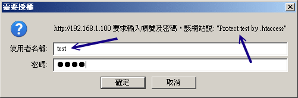

事實上，剛剛上頭的基本設定已經很足夠朋友們架設 WWW 伺服器所需了！不過，還有很多可以玩玩的地方，
例如個人用戶首頁、虛擬主機以及認證保護的網頁等等。底下我們分別來談一談囉！
 20.3.1 啟動用戶的個人網站
(權限是重點)
20.3.1 啟動用戶的個人網站
(權限是重點)
每一部 WWW 伺服器都有一個首頁，但是如果每個個人用戶都想要有可以自己完全控管的首頁時，那該如何設計？呵呵！Apache
早就幫我們想到了！不過新版的設定檔內常常是預設將這個功能取消的，所以你必需要自行修訂呢！
[root@www ~]# vim /etc/httpd/conf/httpd.conf
# 找到如下的設定項目，大約在 366 行左右：
<IfModule mod_userdir.c>
UserDir disable
#UserDir public_html
</IfModule>
# 將他改成如下的情況喔！
<IfModule mod_userdir.c>
#UserDir disable
UserDir www
</IfModule>
# 重新啟動一下先！
[root@www ~]# /etc/init.d/httpd restart
|
這只是個範例，Apache 預設的個人首頁是放置在家目錄下的 ~/public_html/ 目錄下！假如你的系統有個帳號叫做 student，
那麼預設的屬於 student 的個人首頁就會放置在 /home/student/public_html/ 底下。不過，這個 public_html 實在很討厭，
看起來跟網頁沒有什麼特殊關連性，因此鳥哥都會將這個目錄改為 www，所以 student 的個人首頁就會是在
/home/student/www/ 目錄下，比較好記憶。
|
例題：
如何讓未來所有『新增』的使用者預設家目錄下都有個 www 的目錄？
答：
因為新增使用者時所參考的家目錄在 /etc/skel 目錄內，所以你可以直接 mkdir /etc/skel/www 即可。
若想要讓用戶直接擁有一個簡易的首頁，還能夠使用 echo "My homepage" > /etc/skel/www/index.html 呢！
|
個人首頁的 URL 以及目錄的權限、SELinux 設定
現在假設我們要讓已經存在系統中的 student 這個帳號具有個人首頁，那就得要手動去建置所需要的目錄與檔案才行。
現在請登入 student，並用該帳號建置底下的相關資訊：
[student@www ~]$ mkdir www
[student@www ~]$ chmod 755 www <==針對 www 目錄開放權限
[student@www ~]$ chmod 711 ~ <==不要忘了家目錄也要改！
[student@www ~]$ cd www
[student@www www]$ echo "Test your home" >> index.html
|
由於 CentOS 預設的使用者家目錄權限是 drwx------ ，這個權限將無法讓 Apache
的程序瀏覽啊！所以你至少要讓你的家目錄權限成為 drwx--x--x 才行！這個很重要啊！
那麼未來只要你在瀏覽器的網址列這樣輸入：
『理論上』就能夠看到你的個人首頁了。不過，可惜的是，我們的 SELinux 並沒有放行個人首頁！所以，此時你會發現瀏覽器出現
『You don't have permission』的訊息！趕緊看一下你的 /var/log/messages，裡面應該會教你進行這項工作：
[root@www ~]# setsebool -P httpd_enable_homedirs=1
[root@www ~]# restorecon -Rv /home/
# 第一個指令在放行個人首頁規則，第二個指令在處理安全類型！
|
就可以看到你的使用者個人網頁囉！之後讓使用者自己去設計他的網站吧！現在你知道那個毛毛蟲 (~)
在 URL 上面的意義了吧？ ^_^！不過，多這個毛毛蟲就很討厭～我可不可以將使用者的個人網站設定成為：
是可以啦！最簡單的方法是這樣的：
[root@www ~]# cd /var/www/html
[root@www html]# ln -s /home/student/www student
|
由於我們首頁的『 Options 』內有 FollowSymLinks 這個參數的原因，所以可以直接使用連結檔即可。
另外我們也可以使用 Apache 提供的別名功能 (Alias)，例如這樣做：
[root@www ~]# vim /etc/httpd/conf/httpd.conf
# 找個不與人家設定值有干擾的地方加入這個設定項目：
Alias /student/ "/home/student/www/"
<Directory "/home/student/www">
Options FollowSymLinks
AllowOverride None
Order allow,deny
Allow from all
</Directory>
[root@www ~]# /etc/init.d/httpd restart
|
不過，如果你使用這個方法的話得要特別注意，在 httpd.conf 內的 Alias 後面接的目錄，需要加上目錄符號 (/) 在結尾處，
同時，網址列必須要輸入 http://IP/student/ ！亦即是結尾也必須要加上斜線才行！否則會顯示找不到該 URL 喔！
20.3.2 啟動某個目錄的 CGI (perl)
程式執行權限
在前幾個小節裡面我們有談到，如果你想要 Apache 可以執行 perl 之類的網頁程式時，
你就得需要安裝一些額外的模組才行。其中 mod_perl 與 mod_python
這兩個軟體建議你最好安裝一下啦！然後我們也提到想要執行 CGI 程式就得到 /var/www/cgi-bin/
目錄下去執行。如果你想要在其他目錄底下執行 CGI 程式是否可以？當然行啊！
假設想要執行 CGI 的程式附檔名為 .cgi 或 .pl ，且放置的目錄在 /var/www/html/cgi/ 時，你可以這樣做：
[root@www ~]# yum install mod_python mod_perl
[root@www ~]# vim /etc/httpd/conf/httpd.conf
# 找到底下這一行，大約在 797 行左右啦：
#AddHandler cgi-script .cgi
# 將他改成底下的模樣，讓附檔名為 .pl 的檔案也能執行喔！
AddHandler cgi-script .cgi .pl
# 然後加入底下這幾行來決定開放某個目錄的 CGI 執行權限。
<Directory "/var/www/html/cgi">
Options +ExecCGI
AllowOverride None
Order allow,deny
Allow from all
</Directory>
[root@www ~]# /etc/init.d/httpd restart
|
接下來只要讓你的 CGI 程式具有 x 權限，那麼他就可以執行啦！舉例來說，你的檔案在 /var/www/html/cgi/helloworld.pl
的話，那麼：
[root@www ~]# mkdir /var/www/html/cgi
[root@www ~]# vim /var/www/html/cgi/helloworld.pl
#!/usr/bin/perl
print "Content-type: text/html\r\n\r\n";
print "Hello, World.";
[root@www ~]# chmod a+x /var/www/html/cgi/helloworld.pl
|
然後在網址列輸入：『http://主機名稱或 IP/cgi/helloworld.pl』即可執行該檔案並將結果顯示在螢幕上面囉！
你可以直接利用檔名的別名來處理即可！更簡單呢。我們現在假設所有在 /var/www/perl/ 目錄下的檔案都可以是 perl
所撰寫的程式碼，那麼我們可以這樣做：
[root@www ~]# vim /etc/httpd/conf/httpd.conf
# 同樣的你要先確認這一行是存在的！
AddHandler cgi-script .cgi .pl
# 然後加入底下這幾行來決定開放某個目錄的 CGI 執行權限。
ScriptAlias /perl/ "/var/www/perl/"
[root@www ~]# /etc/init.d/httpd restart
[root@www ~]# mkdir /var/www/perl
[root@www ~]# cp -a /var/www/html/cgi/helloworld.pl /var/www/perl
|
現在，請在網址列輸入：『http://IP/perl/helloworld.pl』，就能夠看到剛剛的資料了！這個方法比較棒啦！因為該目錄不需要在
Apache 首頁底下也可以成功的啦！這兩個方法你可以隨意取一個來處理即可！不需要兩個都進行啦！
20.3.3
找不到網頁時的顯示訊息通知
如果你的 /var/www/html/cgi 目錄底下沒有任何首頁檔案 (index.???) 時，那當使用者在網址列輸入『
http://your.hostname/cgi 』，請問結果會顯示出什麼呢？可能有兩個：
- 如果你的 Options 裡面有設定 Indexes 的話，那麼該目錄下的所有檔案都會被列出來，提供類似 FTP 的連結頁面。
- 如果沒有指定 Indexes 的話，那麼錯誤訊息通知就會被顯示出來。
事實上 CentOS 所提供的 Apache 已經規範好一些簡單的錯誤資料網頁了，你可以到 /var/www/error/
目錄下瞧瞧就曉得。不過該目錄下的檔案並沒有中文訊息，所以...真要命！至於 Apache 的錯誤訊息設定在這裡：
[root@www ~]# vim /etc/httpd/conf/httpd.conf
# 大約在 875 行左右，預設就是註解掉的！
# ErrorDocument 403 /error/HTTP_FORBIDDEN.html.var
# ErrorDocument 404 /error/HTTP_NOT_FOUND.html.var
# ErrorDocument 405 /error/HTTP_METHOD_NOT_ALLOWED.html.var
# ErrorDocument 408 /error/HTTP_REQUEST_TIME_OUT.html.var
....(後面省略)....
|
雖然 Apache 預設有提供一些額外的資料給我們使用，不過，鳥哥不是很喜歡那樣的畫面啦！反而比較喜歡像是
Yahoo 或是其他大型的網站所提供的資訊頁面，可以提供給用戶一些有效的連結，這樣會比較方便用戶連結到我們的網站啊！
此時我們可以這樣做：
[root@www ~]# vim /etc/httpd/conf/httpd.conf
# 找到底下這一段，大約在 836 行左右，看看這些簡單的範例先：
#ErrorDocument 500 "The server made a boo boo."
ErrorDocument 404 /missing.html <==將註解拿掉吧！
#ErrorDocument 404 "/cgi-bin/missing_handler.pl"
#ErrorDocument 402 http://www.example.com/subscription_info.html
[root@www ~]# /etc/init.d/httpd restart
|
上面那個檔案 /missing.html 必需要放置在你的首頁目錄下，亦即是 /var/www/html/missing.html 啦！
要提醒你的是：『你的所有設定檔當中 (包括 /etc/httpd/conf.d/*.conf)
只能存在一個 ErrorDocument 404 ... 的設定值，否則將以較晚出現的設定為主』。
所以你得先搜尋一下，尤其是很多 Linux 版本的 Apache 並沒有將預設的錯誤訊息註解呢。至於那個 404
是啥意思？他的意義是這樣的：
- 100-199：一些基本的訊息
- 200-299：用戶端的要求已成功的達成
- 300-399：Client 的需求需要其他額外的動作，例如 redirected 等等
- 400-499：Client 的要求沒有辦法完成(例如找不到網頁)
- 500-599：主機的設定錯誤問題
好了，接下來讓我們編輯一下那個 missing.html 的檔案內容吧！ ^_^
[root@www ~]# vim /var/www/html/missing.html
<html>
<head>
<meta http-equiv="Content-Type" content="text/html; charset=utf8">
<title>錯誤訊息通知</title>
<head>
<body>
<font size=+2 face="標楷體">您輸入的網頁找不到！</font><br />
<hr />
親愛的網友，你所輸入的網址並不存在我們的伺服器當中，
有可能是因為該網頁已經被管理原刪除，
或者是你輸入了錯誤的網址。請再次查明後在填入網址囉！
或按<a href="/">這裡</a>回到首頁。
感謝你常常來玩！ ^_^<br />
<hr />
若有任何問題，歡迎聯絡管理員<a
href="mailto:vbird@www.centos.vbird">vbird@www.centos.vbird</a>。
</body>
</html>
|
現在你如果在網址列隨便輸入一個伺服器上不存在的網址，就會出現如下的畫面囉：

圖 20.3-1、找不到網頁時的錯誤通報訊息
當然啦，你可以自行設定出符合你網頁風格的資料啦！例如鳥哥的網站上面就列出一些基本的連結，
幫助網友們可以順利的取得他們想要的資料啊！這也是很重要的功能呢！^_^
20.3.4 瀏覽權限的設定動作
(order, limit)
你該如何限制用戶端對你的 WWW 連線呢？你會說，那就利用 iptables 這個防火牆嘛！那有什麼難的？問題是，
如果同一個 IP 來源，他某些網頁可以瀏覽，但某些網頁不能瀏覽時，該如何設定？iptables 僅能一口氣開放或整個拒絕，
無法針對 WWW 的內容來部分放行。那該如何處理？就透過 apache 內建的 order 項目來處置即可。
先來回憶一下 order 搭配 allow, deny 的相關限制：
- Order deny,allow：以 deny 優先處理，但沒有寫入規則的則預設為 allow。常用於：拒絕所有，開放特定的條件；
- Order allow,deny：以 allow 為優先處理，但沒有寫入規則的則預設為 deny。常用於：開放所有，拒絕特定的條件。
- 如果 allow 與 deny 的規則當中有重複的，則以預設的情況 (Order 的規範) 為主。
舉例來說，如果我們的首頁目錄想要讓 192.168.1.101 及政府部門無法連線，其他的則可以連線，
由上面的說明你可以知道這是『開放所有，拒絕特定』的條件，所以你可以這樣做設定：
[root@www ~]# vim /etc/httpd/conf/httpd.conf
<Directory "/var/www/html">
Options FollowSymLinks
AllowOverride None
Order allow,deny
Allow from all
Deny from 192.168.1.101 <==約在 344 行新增底下兩行！
Deny from .gov.tw
</Directory>
[root@www ~]# /etc/init.d/httpd restart
|
注意一下，因為 Order 是『 allow,deny 』，所以所有規則當中屬於 allow 的都會被優先提到最上方，
為了避免這個設計上的困擾，所以建議你直接將 allow 的規則寫在最上方。
而由於規則當中 192.168.1.101 隸屬於 all 當中 (all 代表所有的嘛！)，因此這個設定項目則為預設值，
亦即為 deny 啦！那個 .gov.tw 的設定項目也一樣。如果是底下的模樣：
[root@www ~]# vim /etc/httpd/conf/httpd.conf
# 底下可是個錯誤的示範，請仔細看下個段落的詳細說明喔！
<Directory "/var/www/html">
Options FollowSymLinks
AllowOverride None
Order deny,allow
Deny from 192.168.1.101
Deny from .gov.tw
Allow from all
</Directory>
|
雖然 deny 會先挪到上方來處理，不過因為 192.168.1.101 是在 all 的範圍內，所以發生重複，
因此這個設定值將會以預設的 allow 為主，因此就無法限制住這個 192.168.1.101 的存取啦！
這邊很容易搞錯的吶！鳥哥也是常常搞到頭昏腦脹的～
|
例題：
如果有個應該要保護的內部目錄，假設在 /var/www/html/lan/ ，
我僅要讓 192.168.1.0/24 這個網域可以瀏覽的話，那麼你應該要如何設定的好？
答：
這個案例當中有點像是『拒絕所有連線，僅接受特定連線』的樣子，因此可以使用 deny,allow 那個情況，
所以你可以這樣做： <Directory "/var/www/html/lan">
Options FollowSymLinks
AllowOverride None
Order deny,allow
deny from all
allow from 192.168.1.0/24
</Directory>
|
事實上，如果想要讓某個網域或者是 IP 無法瀏覽的話，最好還是利用 iptables 來處理比較妥當。
不過如果僅是某些重要目錄不想讓人家來查閱的話，那麼這個 allow, deny 與 order
的設定資料可就很值得參考了。
而除了這個 order 設定值之外，我們還有個限制用戶端能進行的動作的設定喔！
那就是 Limit 這個設定啦！舉例來說，如果我們想要讓使用者在 /var/www/html/lan
這個目錄下僅能進行最陽春的 GET, POST, OPTIONS 的功能，除了這幾個之外的其他功能通通不允許，
那麼你可以這樣做：
[root@www ~]# vim /etc/httpd/conf/httpd.conf
<Directory "/var/www/html/lan">
AllowOverride none
Options FllowSymLinks
# 先允許能夠進行 GET, POST 與 OPTIONS 啦！
<Limit GET POST OPTIONS>
Order allow,deny
Allow from all
</Limit>
# 再規定除了這三個動作之外，其他的動作通通不允許啦！
<LimitExcept GET POST OPTIONS>
Order deny,allow
Deny from all
</LimitExcept>
</Directory>
|
透過 Limit 與 LimitExcept 就能夠處理用戶端能夠進行的動作啦！也就有辦法針對你的資料進行細部保護囉。
不過這些保護真的很細部，一般小網站大致上用不到 Limit 這個玩意兒說。
20.3.5 伺服器狀態說明網頁
既然已經安裝好了 WWW 伺服器，除了提供服務之外，重要的是要如何維護囉！嘿嘿！
那麼是否一定要額外安裝其他的軟體才能知道目前的主機狀態呢？當然不需要啦！我們可以透過 Apache
提供的特別功能來查詢主機目前的狀態！那就是 mod_status 這個模組囉！
這個模組預設是關閉的，你必須要修改設定檔來啟動他才行。
[root@www ~]# vim /etc/httpd/conf/httpd.conf
# 先確定底下這幾個項目真的有存在才行！
LoadModule status_module modules/mod_status.so <==大約在 178 行，就是模組的載入
ExtendedStatus On <==大約在 228 行，你可以將他打開，資訊會比較多！
# 底下的資料則大約在 924 行左右，你可以將他修改成為這樣：
<Location /server-status>
SetHandler server-status
Order deny,allow
Deny from all
Allow from 192.168.1.0/24
Allow from 127.0.0.1
</Location>
[root@www ~]# /etc/init.d/httpd restart
|
接下來你只要在你的網址列輸入主機名稱後面加上 http://hostname/server-status 即可發現如下的模樣：

圖 20.3-2、伺服器目前的狀況回報網頁
輸出的結果包括目前的時間以及 Apache 重新啟動的時間，還有目前已經啟動的程序等等，
還有網頁最下方會顯示每個程序的用戶端與伺服器端的連線狀態。雖然顯示的狀況挺陽春，不過該有的也都有了，
可以讓你約略瞭解一下伺服器的狀況囉。要注意喔，可查閱者 (allow from 的參數)
還是需要限制的比較嚴格一點啦！
20.3.6 .htaccess 與認證網頁設定
對於保護 Apache 本身的資料方面，除了上述的 Order 以及 Limit 之外，還有什麼方式呢？
因為 Order 與 Limit 主要是針對 IP 網域或者是主機名稱來管理，那如果我們用戶端是使用撥接方式取得 IP，
那麼 IP 會一直變動的，如此一來那個保護的目錄使用者也就不能在任何地方進入了，會造成一些困擾。
此時如果能夠使用密碼保護的方式，讓使用者可以輸入帳號/密碼即可取得瀏覽的權限的話，那用戶端就不用受到那個 order
的 Allow, deny 的限制啦！真好～呵呵！Apache 確實剛好有提供一個簡單的認證功能，
讓我們可以輕鬆愉快的就設定好密碼保護的網頁呢！
Tips:
什麼是受保護的資料呢？舉例來說，學校老師們可能會提供一些教學教材或者是習題給同學，
這些資料不想給所有人取得，那麼就可以將這些資料放在特定的受保護的目錄中。還有例如某些重要的 Apache
伺服器分析的資料 (本章後面提及的一些分析工具)，這些資料建置的方法需要啟用 CGI 程式，
而 CGI 程式的執行是有風險的，而且那些分析所得的資料也很重要。此時，該程式與輸出結果就需要放在受保護的目錄啦！
|  |
那麼那個認證網頁如何搞定？簡單的說，他要這樣處理：
- 建立受保護的目錄：既然我們是『按了某個連結進入某個目錄之後，才會出現對話視窗』，
那麼首先當然就是要有那個設定為認證網頁的『目錄』囉！請注意，是要目錄才行喔！
- 設定 Apache 所需參數：然後，在對話視窗中，既然我們需要輸入帳號與密碼，
那麼自然就需要密碼檔囉！另外，雖然 Apache 有支援 LDAP 及 MySQL 等等的認證機制，不過我們這裡並不討論其他的認證機制，
完全使用 Apache 的預設功能而已，所以，底下我們會使用基本 (Basic) 的認證模式喔！
- 建立密碼檔案：處理完基本的設定後，再來則是建立登入時所需要的帳號與密碼！
- 最後，重新啟動 Apache 就 OK 啦！
其中，第二個步驟會比較有趣，我們說過，任何的設定資料都可以直接寫到 httpd.conf 這個設定檔當中，
所以設定保護目錄的參數資料確實可以寫入 httpd.conf 當中。不過，想一想，如果你的 Apache 伺服器有 30
個使用者具有個人首頁，然後他們都需要製作保護目錄，那個 httpd.conf 只有身為 root 的你才能夠修改，
更可怕的是『每次改完都需要重新啟動 Apache』～請問，你的時間精力是否會受到『很嚴厲的考驗？』
所以啦，如果我們能夠透過外部的檔案來取代設定 httpd.conf 內的參數，那麼是否會比較好？
而且最好能夠該檔案設定即生效，不需要重新啟動 Apache 的話，那就更好啦！因為如此一來，
你就可以交給使用者自行管理他們的認證網頁囉！呵呵～透過 httpd.conf 內的 AllowOverride
參數，配合 .htaccess 這個檔案的設定就 OK 搞定！這個設定項目與設定檔 httpd.conf 的關係可以這樣看：

圖 20.3-3、.htaccess 與主要設定檔 httpd.conf 的相關性
也就是說：
- 主設定檔 httpd.conf 的修訂：你必需要在 httpd.conf 這個主設定檔當中先以
AllowOverride 指定某個目錄下的 .htaccess 能夠進行取代的參數為何？一般有 AuthConfig, Options
等等，考慮到系統資料的安全，建議提供 AuthConfig 的項目就好了。設定完畢後請重新啟動 Apache。
- .htaccess 放置的目錄：在受保護的目錄底下務必要存在 .htaccess
這個檔案，透過這個檔案即可修改 httpd.conf 內的設定啊！
- .htaccess 的修改：.htaccess 設定完『立刻生效』，不需要重新啟動
Apache，因為該檔案的內容是『當有用戶端瀏覽到該目錄時，該檔案才會被使用來取代原有的設定。
既然 .htaccess 的用途比較廣，所以底下我們不介紹 httpd.conf 的認證參數了，請你自行測試即可。底下主要以
.htaccess 檔案的設定為主喔！趕緊來看看吧！
假設我要將受保護的資料放置到 /var/www/html/protect 當中，記得，這個目錄要讓 Apache 可以瀏覽到才行。
所以你可以立刻將一些重要的資料給他搬移到這裡來。我們先這樣測試一下吧！建立個簡單的測試網頁即可。
[root@www ~]# mkdir /var/www/html/protect
[root@www ~]# vim /var/www/html/protect/index.html
<html>
<head><title>這是個測試網頁啊！</title></head>
<body>看到這個畫面了嗎？如果看到的話，表示你可以順利進入本受保護網頁啦！
</body></html>
|
2.1 以 root 的身份處理 httpd.conf 的設定資料
這個動作僅有 root 能作啦！你要開始編輯 httpd.conf ，讓受保護的那個目錄可以使用 .htaccess 啊！
[root@www ~]# vim /etc/httpd/conf/httpd.conf
# 確定底下這幾行是存在的，約在 400 行左右！
AccessFileName .htaccess
<Files ~ "^\.ht">
Order allow,deny
Deny from all
Satisfy All
</Files>
# 在某個不受影響的地方加入這一段：
<Directory "/var/www/html/protect">
AllowOverride AuthConfig
Order allow,deny
Allow from all
</Directory>
[root@www ~]# /etc/init.d/httpd restart <==重新啟動，不要忘記了！
|
這樣就設定妥當了，很簡單吧！再接下來要準備 .htaccess 的建立了。
2.2 建立保護目錄下的 .htaccess 檔案：只要有權限建立者即可進行
要注意，這個檔案是在保護目錄底下喔！不要放錯地方啦！所以你要這樣做：
[root@www ~]# cd /var/www/html/protect
[root@www protect]# vim .htaccess
# 只要加入底下這幾行即可
AuthName "Protect test by .htaccess"
Authtype Basic
AuthUserFile /var/www/apache.passwd
require user test
|
這些參數的意義是這樣的：
- AuthName：在要你輸入帳號與密碼的對話視窗中，出現的『提示字元』
- AuthType：認證的類型，我們這裡僅列出 Apache 預設的類型，亦即是『basic』的啦
- AuthUserFile：這個保護目錄所使用的帳號密碼設定檔。
也就是說，這個檔案是隨便你設定的，當然啦，所以使用者當然可以自行設定帳號與密碼囉。
檔案內的帳號不限在 /etc/passwd 出現的使用者！另外，這個檔案不要放置在
Apache 可以瀏覽的目錄內，所以我將他放置在首頁之外！避免被不小心竊取。
- require：後面接可以使用的帳號。假如 /var/www/apache.passwd 內有三個帳號，
分別是 test, test1, test2 ，那我這裡只寫了 test ，因此 test1, test2 將無法登入此目錄。
如果要讓該密碼檔內的使用者都能夠登入，就改成『require
valid-user』即可啊！
設定好就立刻生效了，不需要重新啟動任何東西啊！
3. 建立密碼檔案 htpasswd (只要有權限即可執行)
Apache 預設讀取的帳號/密碼設定資料是由 htpasswd 所建立的，這個指令的語法是這樣的：
[root@www ~]# htpasswd [-cmdD] 密碼檔檔名 使用者帳號
選項與參數：
-c ：建立後面的密碼檔案。如果該檔案已經存在，則原本的資料會被刪除！
所以如果只是要新增使用者(檔案已存在時)，不必加上 -c 的參數！
-m ：不使用預設的 CRYPT 加密，改用 MD5 方式加密密碼！
-d ：使用更複雜的 SHA 方式來加密！
-D ：刪除掉後面接的那個使用者帳號！
# 1. 建立 apache.passwd ，帳號為 test
[root@www ~]# htpasswd -c /var/www/apache.passwd test
New password: <==這裡輸入一次密碼，注意，螢幕不會有任何訊息。
Re-type new password: <==這裡再輸入一次
Adding password for user test
[root@www ~]# cat /var/www/apache.passwd
test:FIquw/..iS4yo <==你瞧瞧！已經建立一個新使用者！
# 2. 在已存在的 apache.passwd 內增加 test1 這個帳號：
[root@www ~]# htpasswd /var/www/apache.passwd test1
|
再次強調，這個檔案檔名需要與 .htaccess 內的 AuthUserFile 相同，且不要放在瀏覽器可以瀏覽到的目錄！
這樣就算設定完畢啦！你可以使用瀏覽器在網址列輸入：『http://your.hostname/protect』試看看，結果會如何？
會像底下這個樣子：

圖 20.3-4、瀏覽到受保護的目錄時，瀏覽器出現的提示視窗示意圖
如果你曾經瀏覽過這個目錄了，當時可能尚未製作保護的檔案，或者是檔案設計錯誤，導致你曾經可以瀏覽該網頁，
則該網頁會被你的瀏覽器快取 (cache) 起來，所以可登入的畫面會一再地出現而不會跑出需要認證的對話視窗。此時你應該要：
- 務必將全部的瀏覽器都關閉，再重新啟動瀏覽器。因為你成功的登入該目錄後，該次登入的資訊會快取在這次的連線上喔！
- 可以將瀏覽器上頭的『reload (重新讀取)』按下去，讓瀏覽器重新讀取一次；否則快取不會更新。
- 可以將瀏覽器的快取資料全部清除，關閉瀏覽器後再重新啟動瀏覽器看看。
如果還是一直出問題，那就只好前往登錄檔 (/var/log/httpd/error_log) 察看錯誤資訊囉。
常見的錯誤只是打錯字啦！@_@
20.3.7 虛擬主機的設定 (重要！)
接下來我們要談的是『主機代管』...瞎密？不是啦～是一個稱為虛擬主機的東西啦～這東西很有用喔！他可以讓你的一部
Apache 看起來像有多個『主站首頁』的感覺啦！
所謂的虛擬主機，基本上就是『讓你的一部伺服器上面，有好多個 "主網頁"
存在，也就是說，硬體實際上只有一部主機，但是由網站網址上來看，則似乎有多部主機存在的樣子！』。
舉個例子來說好了，鳥哥提供的網站主要有主要學習網站以及新手討論區，分別在底下的連結：
這兩個連結你給他點下去，會發現其實是不同的資料內容，不過，如果你用
dig 之類的軟體來查驗 IP 的話，會發現這兩個網址都指向同一個
IP ㄟ！怎麼會這樣？沒錯啊！這就是虛擬主機的主要功能！他可以讓你的多個主機名稱對應到不同的主網頁目錄 (DocumentRoot 參數)，
所以看起來會像有多部實際主機的模樣啦！這樣說，瞭解虛擬主機了嗎？
那麼要架設虛擬主機需要什麼咚咚呢？以剛剛鳥哥的網站的結果為例，我必需要有多個主機名稱對應到同一個 IP 去，
所以說，你必需先擁有多個主機名稱才行。要如何擁有多個主機名稱？那就是：
- 向 ISP 申請多個合法的主機名稱，而不自己架設 DNS；
- 自行設定經過合法授權的 DNS 主機來設定自己所需要的主機名稱。
相關的 DNS 申請與設定技巧我們在前幾章都談過了，
你可得自行去瞧瞧先！
我們在第十九章 DNS 裡面不是有設定了多個主機名稱嗎？
那些主機名稱就是為了要在這裡實作用的啦！ ^_^！你得要注意的是，我的每個主機名稱都必需要對應到某個主網頁目錄，
底下則是鳥哥的一個簡單範例：
| 主機名稱 | 對應的主目錄 |
| linux.centos.vbird | /var/www/html |
| www.centos.vbird | /var/www/www |
| ftp.centos.vbird | /var/ftp (較特殊) |
接下來就是開始設定囉！要告訴你的是，建議你將虛擬主機的設定建立一個新的檔案在
/etc/httpd/conf.d/*.conf 當中，因為如此一來你的虛擬主機設定檔就可以進行搬移，
修改的時候也不會影響到原有的 httpd.conf 的資料！而因為 httpd.conf 內有個
Include 的參數將 /etc/httpd/conf.d/*.conf 的檔案都讀入設定檔當中，所以設定上面就變的很輕便，
備份與升級的時候也比較容易處理嘛！不囉唆，趕緊來實驗一下先！
# 1. 先建立所需要的目錄：
[root@www ~]# mkdir /var/www/www <==www.centos.vbird 所需！
[root@www ~]# yum install vsftpd <==/var/ftp 可由系統軟體提供
[root@www ~]# echo "www.centos.vbird" > /var/www/www/index.html
[root@www ~]# echo "ftp.centos.vbird" > /var/ftp/index.html
# 原有的首頁 (/var/www/html) 就不更動了！另建兩個不同的首頁內容，可供測試用。
# 2. 開始編輯設定檔，這裡鳥哥用額外的檔案來設定喔！
[root@www ~]# vim /etc/httpd/conf.d/virtual.conf
# 底下這一行在規定『本機任何介面的 port 80 所指定的虛擬主機』的意思。
NameVirtualHost *:80
# 先針對兩個多出來的可瀏覽目錄進行權限方面的規範啊！
<Directory "/var/www/www">
Options FollowSymLinks
AllowOverride None
Order allow,deny
Allow from all
</Directory>
<Directory "/var/ftp">
Options FollowSymLinks Indexes
AllowOverride None
Order allow,deny
Allow from all
</Directory>
# 針對三部主機的 DocumentRoot 進行定！
<VirtualHost *:80>
ServerName linux.centos.vbird
DocumentRoot /var/www/html
</VirtualHost>
<VirtualHost *:80>
ServerName www.centos.vbird
DocumentRoot /var/www/www
CustomLog /var/log/httpd/www.access_log combined
# 不同的主頁可以指定不同的登錄檔資訊，這樣比較好 debug 與分析啦！
</VirtualHost>
<VirtualHost *:80>
ServerName ftp.centos.vbird
DocumentRoot /var/ftp
</VirtualHost>
[root@www ~]# /etc/init.d/httpd restart
|
你要注意的只有幾點：
- 在虛擬主機的設定上還有很多的可用的功能，不過，最低的限度是需要有 ServerName 及 DocumentRoot 這兩個即可！
- 使用了虛擬主機後，原本的主機名稱 (linux.centos.vbird) 也要同時寫入虛擬主機的對應中，
否則這個主機名稱可能會不知道被丟到哪裡去喔！
- 在 www.centos.vbird 這個主機當中多了個 CustomLog ，表示任何向 www.centos.vbird 要求資料的記錄都會改寫入
/var/log/httpd/www.access_log 而不是預設的 /var/log/httpd/access_log。
但這個新增的登錄檔必需要加入 logrotate 的管理當中才行喔！否則登錄檔會大到『爆表』
接下來，只要你用戶端的瀏覽器可以找到這三個主機名稱並連線到正確的 IP 去，
你這個 Apache 就可以同時提供三個網站的站址了，很方便吧！^_^。
虛擬主機為什麼會這麼熱門啊？這是因為他可以進行底下的任務：
- 主機代管：
如果你有一部很快速的電腦，配合你的網路頻寬又大的話，那麼你可以用這個虛擬主機的技術來『拉客』喔！
因為畢竟不是所有公司都有維護伺服器的能力，如果你能夠提供合理的流量、親和的資料傳輸介面、
穩定的提供服務，並且給予類似 MySQL 資料庫的支援，那麼當然有可能進行『主機代管』的業務啊！你說是吧！ ^_^
- 伺服器資料備援系統：
你可以在兩個地方放置兩部主機，主機內的網頁資料是一模一樣的 (這個可以使用
rsync 來達成的) ，那麼你將可以利用 Apache 的虛擬主機功能，
配合 DNS 的 IP 指向設定，讓某一部主機掛點時，另外一部主機立刻接管 WWW 的要求！
讓你的 WWW 伺服器不會有任何斷線的危機啊！ ^_^ (註：當 A 伺服器掛點時，
趕緊設定 DNS ，讓原本 A 的 IP 指定給 B，則任何向該 IP 要求的 WWW 將會被導向 B，
B 有 A 的備份資料以及虛擬主機設定，搞定！)
- 將自己的資料分門別類：
如果野心沒有這麼大的話，那麼如果你有幾個不同的資料類型時，也可以利用虛擬主機將各種資料分門別類啦！
例如將部落格指向 blog.centos.vbird，將討論區指向 forum.centos.vbird ，將教學資料指向
teach.centos.vbird 等等，這樣的網址就很容易讓用戶端瞭解啦！你說是吧！ ^_^